전기산업기사 (2009-07-26 기출문제)
1과목: 전기자기학
1. 어떤 코일의 인덕턴스를 측정하였더니 4[H] 이고, 여기에 직류 전류 I[A]를 흘려주니 이 코일에 축적된 에너지가 10[J] 이었다면, 전류 I[A] 는?
- 0.5
- √5
- 5
- 25
(정답률: 76%)

2. 서로 결합된 2개의 코일을 직렬로 연결하면 합성 자기 인덕턴스가 20mH이고, 한쪽 코일의 연결을 반대로 하면 8mH가 되었다. 두 코일의 상호 인덕턴스는?
- 3 [mH]
- 6 [mH]
- 14 [mH]
- 28 [mH]
(정답률: 61%)
3. 내압과 용량이 각각 200V 5[㎌], 300V 4[㎌], 400V 3[㎌], 500V 3[㎌]인 4개의 콘덴서를 직렬 연결하고 양단에 직류 전압을 가하여 전압을 서서히 상승시키면 최초로 파괴되는 콘덴서는? (단, 콘덴서의 재질이나 형태는 동일)
- 200V 5[㎌]
- 300V 4[㎌]
- 400V 3[㎌]
- 500V 3[㎌]
(정답률: 85%)
4. 대전 도체의 성질 중 옳지 않은 것은?
- 도체 표면의 전하밀도를 σ[C/m2]이라 하면 표면상의 전계는
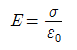
이다. - 도체 표면상의 전계는 면에 대해서 수평이다.
- 도체 내부의 전계는 0이다.
- 도체는 등전위이고, 그의 표면은 등전위면이다.
(정답률: 73%)
5. 100MHz 의 전자파의 파장 [m]은?
- 0.3
- 0.6
- 3
- 6
(정답률: 72%)
6. 일반적으로 자구 (magnetic domain)를 가지는 자성체는?
- 유전체
- 강자성체
- 역자성체
- 비자성체
(정답률: 80%)
7. 평행판 콘덴서의 극간 거리를 1/2로 줄이면 콘덴서 용량은 처음 값에 비해 어떻게 되는가?
- 1/2배
- 1/4배
- 2배
- 4배
(정답률: 80%)
8. 다음 중 벡터에 대한 계산식으로 틀린 것은?
- i ㆍ i = j ㆍ j = k ㆍ k = 0
- i ㆍ j = j ㆍ k = k ㆍ i = 0
- A ㆍ B = ABcosθ
- i × i = j × j = k × k = 0
(정답률: 58%)
9. 전류의 세기가 I[A], 반지름 r[m]인 원형 선절류 중심에 m[Wb]인 가상 점 자극을 둘 때 원형 선 전류가 받는 힘은 몇 [N] 인가?
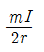
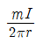
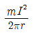
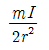
(정답률: 55%)
10. 평행판 콘덴서의 면적이 S[m2], 양단의 극판 간격이 d[m]일 때, 비유전율 ℇS전체를 채우면 정전용량 [F]은? (단, 진공 중의 유전률은 ℇ0 다.)
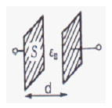
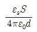
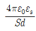
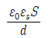
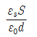
(정답률: 77%)
11. 송전선의 전류가 0.01초간에 10[KA] 변화할 때 송전선과 평행한 통신선에 유도되는 전압은? (단, 송전선과 통신선간의 상호 유도계수는 0.3[mH]이다.)
- 3V
- 300V
- 3000V
- 300000V
(정답률: 52%)
12. 25[℃]에서 저항이 10[Ω]인 코일이 있다. 70[℃]에서 코일의 저항 [Ω]은? (단 25[℃]에서 코일의 저항 온도 계수는 0.004이다.)
- 10
- 10.6
- 11.2
- 11.8
(정답률: 46%)
13. 저항 24[Ω]의 코일을 지나는 자속이 0.3 cos 800t[Wb]일 때 코일에 흐르는 전류의 최대값 [A]은?
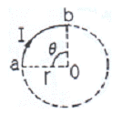
- 10
- 20
- 30
- 40
(정답률: 54%)
14. 공기 중에서 무한 평면 도체 표면 아래의 1[m] 떨어진 곳에 1[C]의 점전하가 있다. 전하가 받는 힘의 크기 [N]는?
- 9 × 109
- 9/2 × 109
- 9/4 × 109
- 9/16 × 109
(정답률: 60%)
15. 어떤 막대 철심이 있다. 단면적이 0.4[m2]이고, 길이가 0.8[m], 비 투자율이 20이다. 이 철심의 자기 저항은 약 몇 [AT/Wb]인가?
- 3.86 × 104
- 3.86 × 105
- 7.96 × 104
- 7.96 × 105
(정답률: 53%)
16. 다음 중 변위전류에 대한 설명으로 옳은 것은?
- 자석내에 자장의 변화에 의해서 생긴 전류
- 도체 중에 전자의 이동에서 생긴 전류
- 초전도체 중에 자장을 방해하는 전류
- 유전체 중에 전속밀도의 시간적 변화에 의한 전류
(정답률: 74%)
17. 다음 중 전기력선의 일반적인 성질로 옳지 않은 것은?
- 전기력선은 부전하에서 시작하여 정전하에서 그친다.
- 전기력선은 그 자신만으로 폐곡선이 되는 일은 없다.
- 전기력선은 전위가 높은 점에서 낮은 점으로 향한다.
- 도체 내부에는 전기력선이 없다.
(정답률: 72%)
18. 같은 양, 같은 부호의 전하가 어느 거리만큼 떨어져 있을 때, 전하 사이의 중점에 있어서의 전계[V/m]의 세기는?
- 0
- ∞
- 9 × 109
- 1/9 × 109
(정답률: 75%)
19. 고전압이 가해진 유전체 중에 공기의 기포가 있으면 유전체 중의 기포는 절연에 영향을 준다. 절연은 유전체의 유전율에 대하여 어떠한가?
- 유전율이 클수록 절연은 향상된다.
- 유전율이 작을수록 절연은 나빠진다.
- 유전율에는 무관계하다.
- 유전율이 클수록 절연은 나빠진다.
(정답률: 58%)
20. 펠티에 효과에 관한 공식 또는 설명으로 틀린 것은? (단, H는 열량, P는 펠티에 계수, I는 전류, t는 시간이다.)
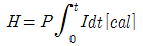
- 펠티에 효과는 지벡 효과와 반대의 효과이다.
- 반도체와 금속을 결합시켜 전자 냉동 등에 응용된다.
- 펠티에 효과란 동일한 금속이라도 그 도체 중의 2점간에 온도차가 있으면 전류를 흘림으로써 열의 발생 또는 흡수가 생긴다는 것이다.
(정답률: 63%)
2과목: 전력공학
21. 다음 중 송전계통의 안정도를 증진시키는 방법으로 볼 수 없는 것은?
- 전압 변동을 적게 한다.
- 직렬리액턴스를 크게 한다.
- 제동 저항기를 설치한다.
- 고속 재폐로 방식을 채용한다.
(정답률: 79%)
22. 설비 용량이 각각 75kw, 80kw, 85kw의 부하 설비가 있다. 수용률이 60%라면 최대 수요전력 [kw]은?
- 96
- 144
- 240
- 400
(정답률: 59%)
23. 역률 80%, 5000KVA,의 부하를 역률 90%로 개선하고자 한다. 이 경우 필요한 콘덴서의 용량 [KVA]은?(오류 신고가 접수된 문제입니다. 반드시 정답과 해설을 확인하시기 바랍니다.)
- 820
- 1080
- 1350
- 2160
(정답률: 47%)
24. 가공 전선로에 사용하는 현수 애자련이 10개라고 할 때 다음 중 전압 부담이 최소인 것은?
- 전선에서 8번째 애자
- 전선에서 5번째 애자
- 전선에서 3번째 애자
- 전선에서 1번째 애자
(정답률: 65%)
25. 다음 중 수차 발전기가 난조를 일으키는 원인은?
- 발전기의 관성 모멘트가 크다
- 발전기의 자극에 제동권선이 있다.
- 수차의 속도 변동률이 적다.
- 수차의 조속기가 예민하다.
(정답률: 67%)
26. 전력계통에서 안정도란 주어진 운전 조건하에서 계통이 안정하게 운전을 계속할 수 있는가의 능력을 말한다. 다음 중 안정도의 구분에 포함되지 않는 것은?
- 동태 안정도
- 과도 안정도
- 정태 안정도
- 동기 안정도
(정답률: 64%)
27. 일반적으로 수용가 상호간, 배전 변압기 상호간, 급전선 상호간 또는 변전소 상호간에서 각개의 최대 부하는 그 발생 시각이 약간씩 다르다. 따라서 각개의 최대 수요 전력의 합계는 그 군의 종합 최대 수요 전력보다도 큰 것이 보통이다. 이 최대 전력의 발생시각 또는 발생 시기의 분산을 나타내는 지표는?
- 전일 효율
- 부등률
- 부하율
- 수용률
(정답률: 76%)
28. 그림과 같이 송전선이 4도체인 경우 소선 상호간의 기하학적 평균 거리는?
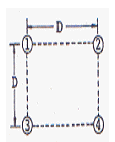
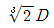
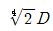
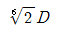
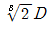
(정답률: 59%)
29. 그림과 같은 선로 정수가 서로 같은 평행 2회선에서 일반회로 정수 C0는 얼마인가? (단, 그림에서 좌측은 송전단, 우측은 수전단이다.)
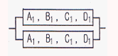
- C1/4
- C1/2
- 2C1
- 4C1
(정답률: 57%)
30. 어느 변전소에서 합성 임피던스가 0.4%(10000[KVA] 기준) 인 곳에 시설 할 차단기의 소요차단 용량[MVA]은?
- 250
- 400
- 2500
- 4000
(정답률: 62%)
31. 철탑으로부터의 전선의 오프셋을 주는 이유로 가장 알맞은 것은?
- 불평형 전압의 유도 방지
- 지락 사고 방지
- 전선의 진동 방지
- 상하 전선의 접촉방지
(정답률: 71%)
32. 전선로에 댐퍼(DAMPER)를 사용하는 목적은?
- 전선의 진동방지
- 전력손실 격감
- 낙뢰의 내습 방지
- 많은 전력을 보내기 위하여
(정답률: 84%)
33. 다음 중 연가의 효과로 거리가 먼 것은?
- 직렬공진의 방지
- 선로정수의 평형
- 대지 정전용량의 감소
- 통신선의 유도장해의 감소
(정답률: 61%)
34. 원자로에서 카드뮴 봉(rod)에 대한 설명으로 옳은 것은?
- 생체차폐를 한다.
- 냉각제로 사용된다.
- 감속재로 사용된다.
- 핵분열 연쇄반응을 제어한다.
(정답률: 52%)
35. 다음 중 열 사이클의 효율을 올리는 방법과 거리가 먼 것은?
- 과열증기 사용
- 저압저온 이용
- 진공도 향상
- 재생 사이클 채용
(정답률: 66%)
36. 다음 중 고압 수전 설비를 구성하는 기기로 볼 수 없는 것은?
- 변압기
- 배전용 차단기
- 과전류 계전기
- 복수기
(정답률: 70%)
37. 중성점 접지방식 중 소호리액터 접지방식에서 공진조건
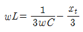
에서 xt는?- 선로 임피던스
- 변압기 임피던스
- 발전기 임피던스
- 부하설비 임피던스
(정답률: 45%)
38. 전극의 어느 일부분의 전위경도가 커져서 공기와의 절연이 파괴되어 생기는 현상은?
- 페란티 현상
- 코로나 현상
- 카르노 현상
- 보어 현상
(정답률: 70%)
39. 전력계통에서 변압기의 유기기전력이 발생할 때 나타나는 고조파 중 제 3고조파 및 제 5고조파를 각각 제거시키는 방법으로 다음 중 가장 적절한 것은?
- 제 3고조파 및 제 5고조파 모두 직렬리액터를 설치하여 제거할 수 있다.
- 변압기 결선 방식으로는 고조파를 제거할 수는 없다.
- 제 3고조파는 전력용 콘덴서를 설치하여 제거하고, 제 5고조파는 직렬리액터를 설치하여 제거한다.
- 변압기 △ 결선 방식으로 제 3고조파를 제거하고, 제 5고조파는 직렬 리액터를 설치하여 제거한다.
(정답률: 59%)
40. 최근 GIS 설비에서 사용되고 있는 소호능력과 차단능력이 우수한 SF6 가스를 이용한 차단기는?
- 공기 차단기
- 차기 차단기
- 가스 차단기
- 진공 차단기
(정답률: 80%)
3과목: 전기기기
41. 직류 분권 발전기가 있다. 극수 6, 전기자도체 총수 400, 각 자극의 자속은 0.01[Wb]이고, 그 회전수가 600[rpm] 일 때, 전기자에 유기되는 기전력은 약 몇[V] 인가? (단, 전기자 권선은 파권이다)
- 40
- 120
- 160
- 240
(정답률: 70%)
42. 내철형 3상 변압기를 단상 변압기로 사용할 수 없는 이유로 가장 옳은 것은?
- 1,2차간의 각 변위가 있기 때문에
- 각 권선마다의 독립된 자기 회로가 있기 때문에
- 각 권선마다의 독립된 자기 회로가 없기 때문에
- 각 권선이 만든 자속이 3/2 위상차가 있기 때문에
(정답률: 64%)
43. 단상 변압기 3대를 △ - Y로 결선했을 때의 1차, 2차의 전압 위상차는?
- 0°
- 30°
- 60°
- 90°
(정답률: 48%)
44. 어떤 주상 변압기가 4/5 부하일 때, 최대 효율이 된다고 한다. 전부하에 있어서의 철손과 동손의 비 PC/PJ는 약 얼마인가?
- 0.64
- 1.56
- 1.64
- 2.56
(정답률: 56%)
45. 동기 발전기를 모선에 연결하기 전에 동기 검정기로 모선의 값과 동기 발전기의 값들이 일치하는 지를 확인하려고 한다. 동기 검정기로 알 수 없는 것은?
- 주파수
- 상회전 방향
- 전류
- 전압의 크기
(정답률: 35%)
46. 직류기의 전기자에 사용되는 전기자 권선법은?
- 개로권
- 환상권
- 2층권
- 단층권
(정답률: 64%)
47. 60[Hz], 4극, 정격속도 1720[rpm]의 권선형 3상 유도 전동기가 있다. 전부하 운전 중에 2차 회로의 저항을 4배로 하면, 속도는 약 몇[rpm]으로 되는가?
- 962
- 1215
- 1483
- 1656
(정답률: 52%)
48. 수은 정류기의 역호를 방지하기 위하여 운전상 주의할 사항으로 틀린 것은?
- 과도한 부하 전류를 피한다.
- 진공도를 항상 양호하게 유지한다.
- 철제 수은 정류기는 양극 바로 앞에 그리드를 설치한다.
- 냉각 장치에 유의하고 과열되면 급히 냉각 시킨다.
(정답률: 57%)
49. 동기 발전기에 관한 다음 설명 중 옳지 않은 것은?
- 단락비가 크면 동기 임피던스가 적다.
- 단락비가 크면 공극이 크고 철이 많이 소요된다.
- 단락비를 적게 하기 위해서 분포권과 단절권을 사용한다.
- 전압강하가 감소되어 전압 변동률이 좋다.
(정답률: 64%)
50. 다음 중 무부하 특성곡선이 존재하지 않는 발전기는?
- 직류 직권 발전기
- 직류 분권 발전기
- 직류 차동복권 발전기
- 직류 가동복권 발전기
(정답률: 53%)
51. 브러시를 이동하여 회전 속도를 제어하는 전동기는?
- 반발 전동기
- 직류 직권 전동기
- 단상 직권 전동기
- 반발 기동형 단상유도 전동기
(정답률: 54%)
52. 정전압 계통에 접속된 동기 발전기는 그 여자를 약하게 하면?
- 출력이 감소한다.
- 전압이 강하된다.
- 뒤진 무효 전류가 증가한다.
- 앞선 무효 전류가 증가한다.
(정답률: 37%)
53. 단상 브리지 정류 회로에서 저항 부하에 인가되는 전압이 200[V]이면 전원 전압은 약 몇[V]인가? (단, 정류기에서의 전압 강하는 무시한다.)
- 50
- 112
- 222
- 340
(정답률: 57%)
54. 3상 권선형 유도 전동기의 회전자에 슬립 주파수의 전압을 공급하여 속도를 변화시키는 방법은?
- 교류 여자 제어법
- 1차 저항법
- 주파수 변환법
- 2차 여자 제어법
(정답률: 56%)
55. 직류기의 전기자 권선법 중 파권의 이점은?
- 효율이 크게 좋아진다.
- 전류가 증가된다.
- 전압이 높아진다.
- 출력이 증가한다.
(정답률: 56%)
56. 다음 중 직류 전동기의 속도제어법이 아닌 것은?
- 계자 제어법
- 전압 제어법
- 저항 제어법
- 주파수 제어법
(정답률: 60%)
57. 다음 중 SCR에 관한 설명으로 옳은 것은?
- 증폭 기능을 갖는 1방향성 3단자 소자이다.
- 정류 기능을 갖는 1방향성 3단자 소자이다.
- 제어 기능을 갖는 양방향성 3단자 소자이다.
- 스위칭 기능을 갖는 양방향성 3단자 소자이다.
(정답률: 63%)
58. 운전 중인 유도 전동기의 등가회로에서 기계적 출력을 나타내는 것은?
- 2차 회로저항
- 부하 저항
- 2차 임피던스
- 2차 유기전압
(정답률: 35%)
59. 동기 발전기의 외부특성곡선에서 부하전류가 일정한 경우 전압 변동률이 가장 적게 되는 역률은? (단, 유도성 부하)
- 0
- 0.6
- 0.8
- 1
(정답률: 65%)
60. 3상 유도 전동기의 출력이 10[KW], 슬립이 5[%]일 때, 2차 동손[KW]은?
- 0.426
- 0.526
- 0.626
- 0.726
(정답률: 67%)
4과목: 회로이론
61. 다음과 같은 회로에서 2[Ω] 양단에 걸리는 전압 Vab는 몇[V] 인가?
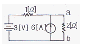
- 2
- 4
- 5
- 6
(정답률: 35%)
62. 다음의 회로에서 전류 I2 는 몇[A] 인가?
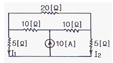
- 1
- 2
- 3
- 5
(정답률: 48%)
63. R-L 직렬 회로에 v= 10 + 141.4sinwt + 70.7sin(3wt+60°)[V]인 전압을 가할 때 제 3고조파 전류의 실효값은 약 몇[A] 인가? (단, R = 8[Ω], wL = 2[Ω]이다.)
- 1
- 3
- 5
- 7
(정답률: 55%)
64. 3상 불평형 전압에서 역상 전압이 50[V] 이고, 정상 전압이 200[V], 영상 전압이 10[V] 라고 할 때 전압의 불평형률[%] 은?
- 1
- 5
- 25
- 50
(정답률: 72%)
65. 100[V] 전원에 1[KW]의 선풍기를 접속하니 12[A]의 전류가 흘렀다. 선풍기의 무효율은 약 몇 [%]인가?
- 50
- 55
- 83
- 91
(정답률: 40%)
66. R-L-C 직렬 회로에서 공진시의 전류는 공급 전압에 대하여 어떤 위상차를 갖는가?
- 0도
- 90도
- 180도
- 270도
(정답률: 57%)
67. R = 15[Ω], XL= 12[Ω], XC = 30[Ω]이 병렬로 접속된 회로에 120[V]의 교류 전압을 인가하면 전원에 흐르는 전류는 몇 [A] 인가?
- 5
- 7
- 10
- 22
(정답률: 41%)
68. 실효값이 100[V], 주파수가 50[Hz]인 교류 전압을 저항 100[Ω], 용량 10[㎌]인 RC 직렬 회로에 가했을 때, 역률은 약 얼마인가?
- 0.3
- 0.5
- 0.6
- 0.8
(정답률: 38%)
69. 무손실 분포정수 선로에서 인덕턴스가 1[μH/m]이고, 정전 용량이 400[pF/m]일 때, 특성 임피던스는 몇[Ω]인가?
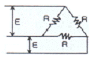
- 25
- 30
- 40
- 50
(정답률: 51%)
70. 다음의 4단자 회로에서 단자 ab에서 본 구동점 임피던스 Z11는 몇[Ω] 인가?
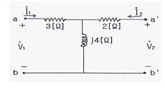
- 2+j4
- 2-j4
- 3+j4
- 3-j4
(정답률: 61%)
71. v = 141sin377t[V]인 정현파 전압의 주파수는 약 몇 [Hz]인가?
- 40
- 50
- 60
- 120
(정답률: 79%)
72.
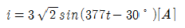
의 평균값은 약 몇 [A]인가?- 5.4
- 4.35
- 2.7
- 1.35
(정답률: 47%)
73. 대칭 3상 Y부하에서 각 상의 임피던스가 Z = 3 +j4[Ω]이고, 부하 전류가 20[A] 일때, 피상전력은 얼마 [VA]인가?(오류 신고가 접수된 문제입니다. 반드시 정답과 해설을 확인하시기 바랍니다.)
- 1800
- 2000
- 2400
- 2800
(정답률: 52%)
74. 4단자 정수 A,B,C,D 중에서 전압 이득의 차원을 가지는 것은?
- A
- B
- C
- D
(정답률: 60%)
75. 다음과 같은 회로가 정저항 회로가 되기 위한 R[Ω]의 값은 얼마인가?
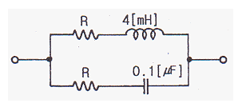
- 200
- 2
- 2 × 10-2
- 2 × 10-4
(정답률: 66%)
76. f(t)=teat의 라플라스 변환은?
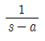
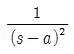
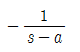
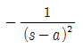
(정답률: 54%)
77. 저항 5Ω], 인덕턴스 10[H]의 직렬회로에 기전력 20[V]를 인가하는데 스위치를 닫고 나서 2[sec]후의 전류는 약 몇 [A]인가?
- 0.25
- 2.53
- 5.32
- 10.02
(정답률: 51%)
78. 어떤 회로에 흐르는 전류가 i = 5 + 14.1 sinωt인 경우 실효값은 약 몇[A] 인가?
- 11.2
- 12.5
- 14.4
- 16.1
(정답률: 59%)
79.
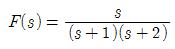
일 때, f(t)를 구하면?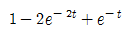
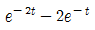
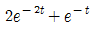
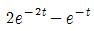
(정답률: 38%)
80. RL 직렬회로에 직류전압을 가했을 때, 흐르는 전류가 정상 전류 I = E/R의 70%에 도달하는데 요하는 시간은? (단, t는 시정수이다.)
- t = 0.7t
- t = 1.1t
- t = 1.2t
- t = 1.4t
(정답률: 33%)
5과목: 전기설비기술기준 및 판단 기준
81. 사용전압이 35000[V] 이하인 특별고압 가공전선과 가공약전류전선을 동일 지지물에 시설하는 경우 특별고압 가공전선로의 보안공사로 적합한 것은?
- 고압 보안공사
- 제 1종 특별고압 보안공사
- 제 2종 특별고압 보안공사
- 제 3종 특별고압 보안공사
(정답률: 43%)
82. 일반적으로 저압 가공전선로와 기설 가공약전류 전선로가 병행하는 경우에는 유도작용에 의한 통신상의 장해가 생기지 않도록 전선과 기설 약전류 전선간의 이격거리는 몇 [m] 이상으로 하여야 하는가? (단, 저압 가공전선은 케이블이 아니다)
- 2
- 3
- 4
- 5
(정답률: 48%)
83. 전압이 22900[V]인 중성점 접지식 전로로서 중성선이 있고 그 중성선을 다중 접지하는 경우 절연 내력 시험전압은 최대 사용전압의 몇 배로 하는가?
- 0.72배
- 0.92배
- 1.1배
- 1.25배
(정답률: 65%)
84. 금속제 지중 관로에 대하여 전식 작용에 의한 장해를 줄 우려가 있어 배류 시설에 선택 배류기를 사용하였다. 이 때 선택 배류기를 보호할 목적으로 시설하여야 하는 것은?
- 과전류 차단기
- 과전압 계전기
- 유입 개폐기
- 피뢰기
(정답률: 64%)
85. 인가가 많이 연접되어 있는 장소에 시설하는 가공전선로의 구성재에 병종 풍압하중을 적용할 수 없는 경우는?
- 저압 또는 고압 가공전선로의 지지물
- 저압 또는 고압 가공전선로의 가섭선
- 사용전압이 35000V이하에 특별고압 절연전선 또는 케이블을 사용하는 특별고압 가공전선로의 지지물
- 사용전압이 35000V 이상인 특별고압 가공전선로에 사용 하는 케이블 및 조가용선
(정답률: 55%)
86. 시가지에서 저압 가공전선로를 도로에 따라 시설할 경우 지표상의 최저 높이는 몇[m] 이상이어야 하는가?
- 4.5
- 5
- 5.5
- 6
(정답률: 51%)
87. 전기부식방지 시설을 할 때 전기부식방지용 전원 장치부터 양극 및 피방식체 까지의 전로에 사용되는 전압은 직류 몇[V] 이하 이어야하는가?
- 20
- 40
- 60
- 80
(정답률: 73%)
88. 사용전압이 저압인 전로에서 전선과 대지간의 전압이 100 [V]인 경우, 전로의 절연저항은 몇[MΩ] 이상이어야 하는가?
- 0.1
- 0.2
- 0.4
- 0.5
(정답률: 70%)
89. 60000[V] 송전선로의 송전선과 수목과의 최소 이격거리 ?
- 1.5
- 2.0
- 2.5
- 3.0
(정답률: 62%)
90. 최대 사용전압이 1차 22000V, 2차6600V의 권선으로서 중성점 비접지식 전로에 접속하는 변압기의 특별 고압 측 절연내력시험 전압은 ?
- 24000
- 27500
- 33000
- 44000
(정답률: 56%)
91. 22.9KV 중성선 다중접지 계통에서 각 접지선을 중성선으로부터 분리하였을 경우의 1Km 마다의 중성선과 대지사이의 합성 전기 저항값은 몇[Ω] 이하이어야 하는가? (단, 전로에 지락이 생겼을 때에 2초 이내에 자동적으로 전로로부터 차단하는 장치가 되어 있다고 한다.)
- 15
- 50
- 100
- 150
(정답률: 38%)
92. 애자사용 공사를 습기가 많은 장소에 시설하는 경우 전선과 조영재 사이의 이격거리는 몇[cm]이상이어야 하는가?(단, 사용전압은 440V인 경우이다.)
- 2.0
- 2.5
- 4.5
- 6.0
(정답률: 52%)
93. 최대 사용 전압 22.9[KV]인 가공 전선과 지지물과의 이격거리는 일반적으로 몇[cm] 이상이어야 하는가?
- 5
- 10
- 15
- 20
(정답률: 43%)
94. 저압 옥내 간선은 특별한 경우를 제외하고 다음 중 어느 것에 의하여 그 굵기가 결정 되는가?
- 변압기 용량
- 전기 방식
- 부하의 종류
- 허용 전류
(정답률: 69%)
95. 고압 및 특별고압 전로의 절연내력시험에서 전로와 대지간에 시험전압을 인가할 때 몇 분간 견디어야 하는가?
- 1분
- 5분
- 10분
- 15분
(정답률: 71%)
96. 폭연성 분진 또는 화약류의 분말이 존재하는 곳의 저압 옥내 배선은 어느 공사에 의하는가?
- 애자 사용 공사 또는 가요 전선관 공사
- 캡타이어 케이블 공사
- 합성 수지관 공사
- 금속관 공사 또는 케이블 공사
(정답률: 71%)
97. 금속관 공사에 관한 사항이다. 일반적으로 콘크리트에 매설하는 금속관의 두께는 몇[mm]이상 되는 것을 사용하여야 하는가?
- 1.0
- 1.2
- 2.0
- 2.5
(정답률: 60%)
98. 380[V] 3상 저압 전동기를 사용하는 공장에 있어서 전동기의 외함 접지는?(관련 규정 개정전 문제로 여기서는 기존 정답인 2번을 누르면 정답 처리됩니다. 자세한 내용은 해설을 참고하세요.)
- 특별 제 3종 접지공사
- 제 3종 접지 공사
- 제 2종 접지 공사
- 제 1종 접지 공사
(정답률: 69%)
99. 전력보안통신 설비인 무선통신용 안테나를 지지하는 목주는 풍압하중에 대한 안전율이 얼마 이상이어야 하는가?
- 1.0
- 1.2
- 1.5
- 2.0
(정답률: 68%)
100. 154[KV]의 옥외 변전소에 있어서 울타리의 높이와 울타리에서 충전부분까지 거리의 합계는 몇[m] 이상이어야 하는가?
- 5
- 6
- 7
- 8
(정답률: 59%)